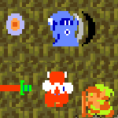

playable games
Glitch Dungeon:
 Made for GameJolt's 2014 Glitch Jam. It took second place overall!
Made for GameJolt's 2014 Glitch Jam. It took second place overall!
My most popular game to date, with over 25,000 unique plays! There was an RPS article about it, and I've even had fan art and speedruns shared with me :D!!!!
Goblin Catcher:
The first graphical game I ever made! It was based off of
this great tutorial!
And I got to the top of the gamedev subreddit for a little while (I was so excited!!).
the Monkey King:
a game I made in a couple weeks off of the fumes of success from glitch dungeon.
My first foray into boss battles... and last!
Pixel Pets:
see abandonware below for when this was a WIP android game.
Echo Island:
a flash game I made for
one game a month.
more of an experiment with programmatic land and sound
generation than a game, really.
note: I'm not sure why my flash games take so long to load. if it crashes, refreshing the browser normally helps!
Gauntlet of Love:

a flash game I made for
one game a month.
a classic zelda arcade clone: complete with "borrowed" sprites and music
note: I'm not sure why my flash games take so long to load. if it crashes, refreshing the browser normally helps!
Text Dungeon:
a very obtuse text adventure game I made originally in python :)
After many complaints, I have made a spoiler-free walkthrough to aid in playthrough.